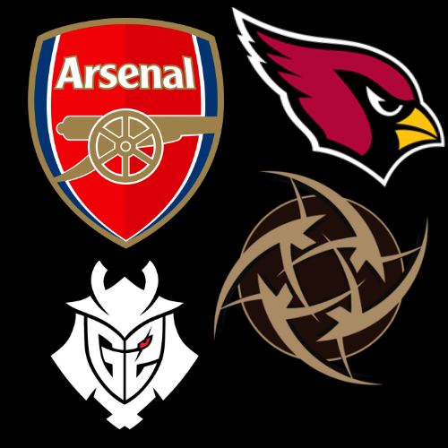

QUEM SOU
Olá, meu nome é Cassiano e atualmente sou estudante do curso de Ciência da Computação da UFFS. Mudei recentemente para Chapecó em busca de
novos ares e de meu objetivo profissional voltado na área de computação/tecnologia. Meus primeiros passos foram interessantes, estou entrando
em contato profundo contato profundo com a programação pela primeira vez. A primeira linguagem objeto de estudos está sendo Python. O senti-
mento que ela me causa é ansiedade, ansiedade para conhecer as outras linguagens. Fora do meio acadêmico, sou entusiasta nas mais variadas
coisas, podendo citar principalmente a música, principalmente rock, clássica e blues. Também tenho um lado apaixonado por esportes e eSports,
apesar de que nos últimos meses não consegui me dedicar da mesma maneira para acompanhar muito clubes que contam um pouco de minha história
como torcedor e como pessoa. Clubes como: Arsenal; Inter de Milão; Arizona Cardinals; Buffalo Bills; NIP; FaZe e G2,Representam o que sou, e
como vejo minha vida, resumidamente, uma junção de conquistas e de derrotas que servem para abrir os olhos e recomeçar novamente um projeto
em busca de novas conquistas e mais glórias para a eternidade de minha história.

OBJETIVO PROFISSIONAL
Experiência ao aprender HTML
Essa é minha primeira experiência com HTML